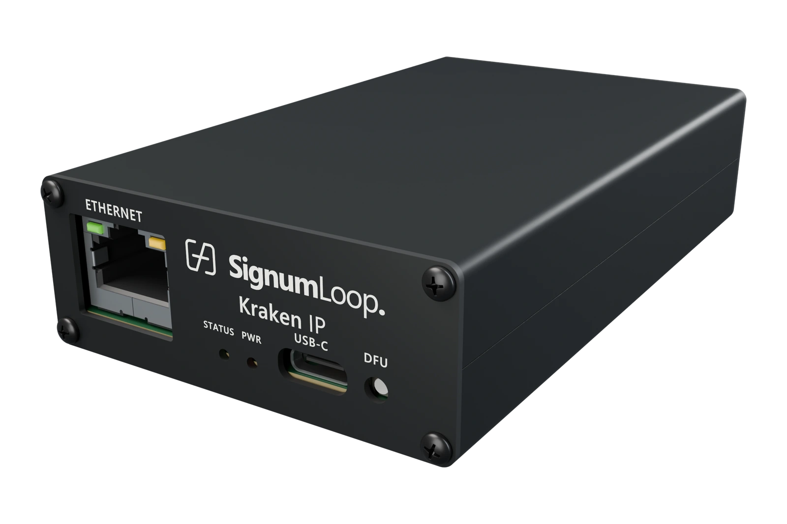
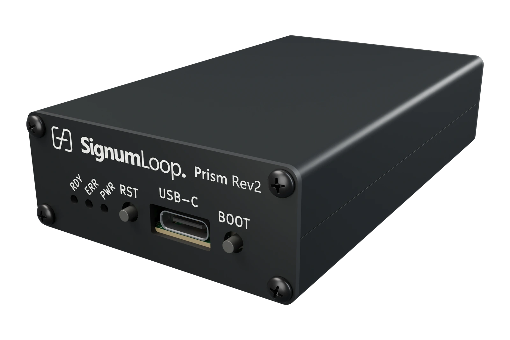
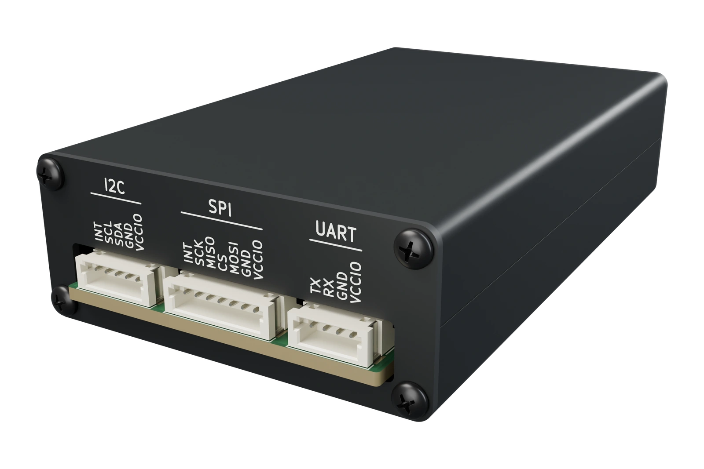

At the sensor interface.
Simulated conditions meet your device where its sensors connect.
Real hardware. Original firmware.
A world of possibilities.
We’re building a new approach to hardware-in-the-loop testing. Bring simulated real-world conditions to your device’s sensor interface, and put your embedded systems to the test.

Your board reads multiple simulated sensors through the emulator. The capture hardware sends your board’s actuator commands back to the simulation.
THE IDEA IS SIMPLE
Simulated conditions meet your device where its sensors connect.
Exercise the code you actually deploy, running on your real hardware.
Explore motion, environmental changes and edge cases in a virtual world.
Automotive
Wearables
Flight control



LET’S BUILD WHAT’S NEXT
We’d love to hear what you’re working on.